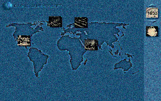

Das Jahrhundert - l933-l945:
Der Weg in den Zweiten Weltkrieg,
In Deutsch, für 486er PC mit 8 MB M und Windows 3.x; Digital Publishing; Vertrieb: Media Sales, München, 98 Mark

Als ,,zeitgemäße Art, Geschichte zu erleben", preist der Verlag Digital Publishing seine insgesamt neunteilige CD-ROM-Reihe ,,Das 20. Jahrhundert" an. Ihr Erstling trägt den Titel ,,Der Weg den Zweiten Weltkrieg" und behandelt die Jahre zwischen 1933 und 1945. An den großen Textpassagen arbeiteten feste Redakteure; zu sehen gibt es em Photos, Tonaufzeichnungen und Wochenschauen. Das Material stammt im Wesentlichen aus der Fernsehserie ,,Between the wars".
Die Hypertext-Oberfläche entwarfen acht Programmierer, die dafür überaus gelungene Werkzeuge entwickelten: ein dreidimensionales Koordinatensystem und eine Suchmaschine, die dieses System sinnvoll ergänzt. Dominiert wird der Bildschirm von der geographischen Koordinate. Man bekommt also immer wieder Landkarten zu sehen, die einen ersten Überblick über Orte historischer Ereignisse geben und durch die man sich klicken kann. Je näher man sich an einzelne Länder, Regionen oder Städte zoomt um so detaillierter werden die Informationen. Leider reduziert die CD- ROM die Geschichte meist auf den reinen Kriegsprozeß
Immer wieder stößt man auf kleine, eingefügte Bilder ohne Untertitel. Dahinter verbergen sich erklärende Texte mit Video- oder Tondokumenten. Diese Filmchen werden automatisch abgespielt, wenn man mit der Maus dazugehörige Begriffe anklickt.
Die zweite Koordinate, mit deren Hilfe die Programmierer das historische Geschehen ordnen, ist eine Zeitachse. Rechts oben am Bildschirm befindet sich ein Jahreszähler, mit dessen Hilfe man zwischen den einzelnen Jahren wechseln kann. Alle Orte auf der Landkarte, die im aktuellen Jahr von Bedeutung und daher aktivierbar sind, werden durch einen roten Punkt gekennzeichnet.
Die dritte Koordinate ist ebenso be ständig im Bild wie der Jahreszähler: Direkt unter dem
Kalender erscheinen im Sekundentakt Porträts berühmter Menschen. Der Sinn des hektischen WechseIs: Klickt man auf ein Portrait, erscheint die dazugehörende Biographie.
Links oben im Bild schließlich befindet sich eine kleine, stilisierte Weltkugel. Dahinter
verbirgt sich die Suchfunktion. Mit thr kann man das lineare Ordnungsprinzip und die Geschichte
der Jahre zwischen 1933 und 1945 aus vielen Blickwinkeln betrachten. Das Suchwort ,,Juden" beispielsweise erzeugt eine einigermaßen vollstän dige Übersicht über Verfolgung der Juden und die Shoa.
Leider bietet die Suchfunktion keine Volltextrecherche, das heißt, man kann nicht sämtliche
erfaßten Texte nach jedem beliebigen Wort durchsuchen. Die Suchfunktion beschränkt sich im wesentlichen auf einzelne Ereignisse, durchsucht wird offensichtlich nur eine Sammmlung
einschlägiger Stichwörter. Das erzeugt eine Ausbeute, die manchen Benutzer ratlos vor dem
Schirm zurückläßt. So find man mit Hilfe des (zugegeben entlegenen) Suchworts ,,Trotzki" nur die Moskauer Ereignisse von 1924, weil in deren Erklärung der Begriff der ,,trotzkistische Opposition" fällt.
Eine Erklärung des Begriffes ,,Nationalsozialismus" ist nur über den Umweg ,,Faschismus" zu erreichen, auf den man erst bei einem Suchergebnis wie dem siebten Komintern-Kongreß stößt. So kommt es, daß man sich für die geschichtlich Aufklärung gleich ein zweites CD-ROM Laufwerk mit einem Lexikon wünsch das einem bei unbekannten Begriffen weiterhilft: Wenn etwa davon die Rede ist Franco habe die ,,Ideologie der Reconquista" eingeführt.
Die Betreiber der digitalen Geschichtswerkstatt haben versprochen, ihre ROM laufend zu verbessern. Vielleicht verfeinern die Redakteure bei der Gelegenheit auch gleich einige Texttpassagen wie die über Eichmann. Da heißt es, von ,,erschreckender Indifferenz gegenüber seinen Opfern" gewesen. Anstelle solcher Floskeln könnten die Redakteure ökonomische und sozialgeschichtliche Eckdaten bringen, die dem Werk guttun würden.
Geplant sind weitere drei Compact Disks zur Geschichte des 20. Jahrhundert (1890-1933, 1945-1968 und 1968-2000 und fünf zur Technikgeschichte. Bis Serie komplett ist, wird es sicher noch sechs bis sieben Jahre dauern. Zudem ist geplant, die Benutzer der CD-ROM online mit dem Verlag zu verbinden, seine Zelte im Microsoft Network aufgeschlagen hat. Geschichtswerkstatt einmal anders.